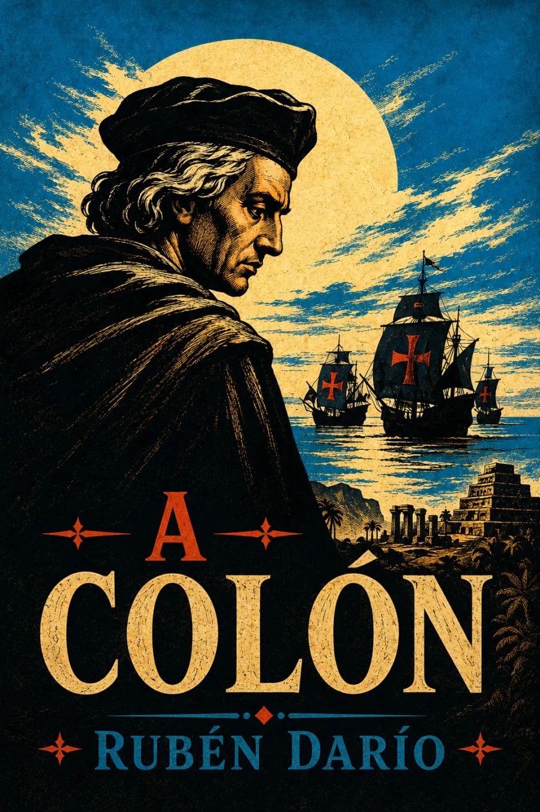

SINOPSIS
Escrito en 1892, durante las celebraciones del cuarto centenario, A Colón invierte el homenaje oficial. Darío apostrofa al almirante como destinatario de una amarga rendición de cuentas: la «india virgen y hermosa» de su imaginación aparece convertida en una América enferma de guerras, caudillismo, desigualdad y violencia. El poema enlaza la conquista con las repúblicas decimonónicas sin absolver a sus élites; contrapone a Cristo y Barrabás, recuerda a Cuauhtémoc, Moctezuma y Atahualpa, y presenta la independencia como promesa todavía incumplida. Más que una historia completa del continente, es una intervención modernista en la disputa por su memoria que obliga a mirar el costo humano oculto por la retórica triunfal del centenario.
Nota de contexto: manuscrito y atribución consultados en la Biblioteca Virtual Miguel de Cervantes; contexto crítico contrastado con el estudio de la Real Academia Española.
CAPÍTULOS
«¡Desgraciado almirante!» · La inversión del homenaje
La América convulsa del siglo XIX
Cuauhtémoc, Moctezuma y Atahualpa
Cristo, Barrabás y las «panteras» del poder
El centenario como duelo y acusación
RESEÑAS

Excelente